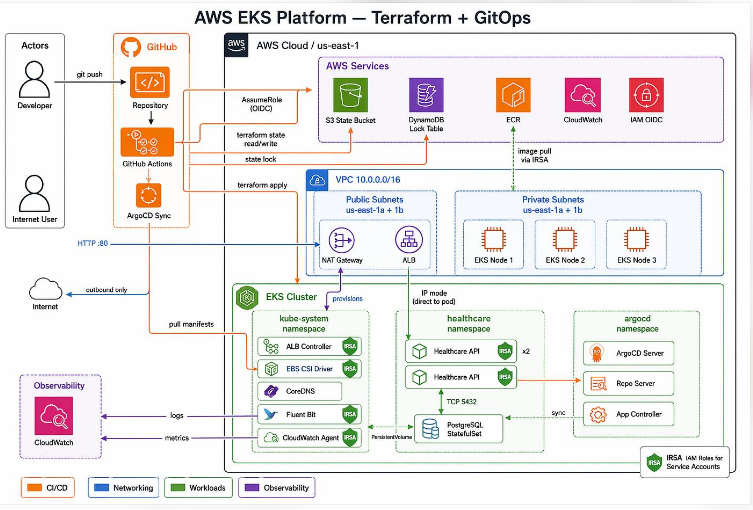
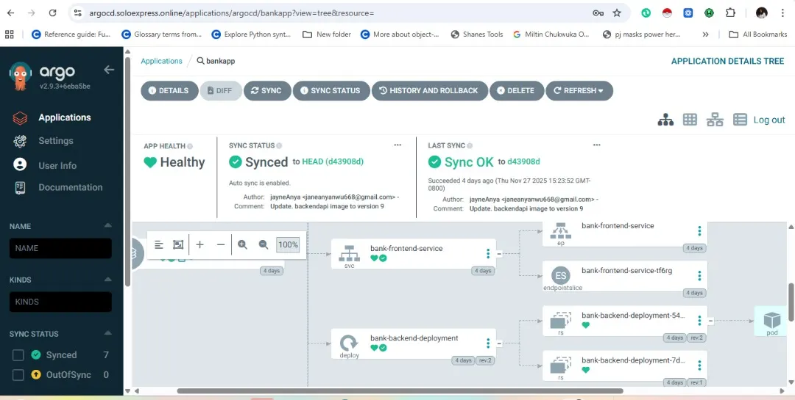
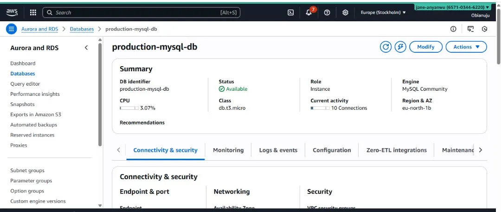
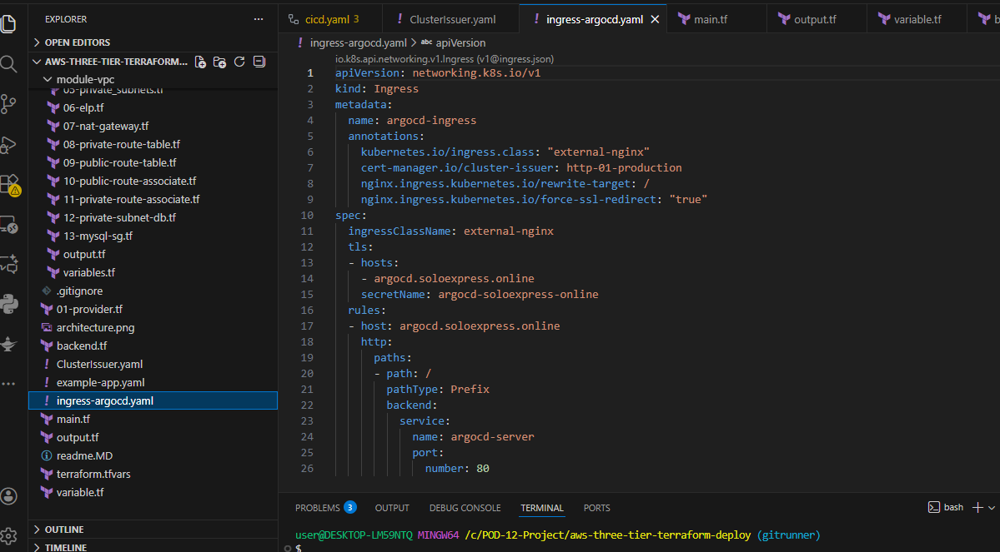
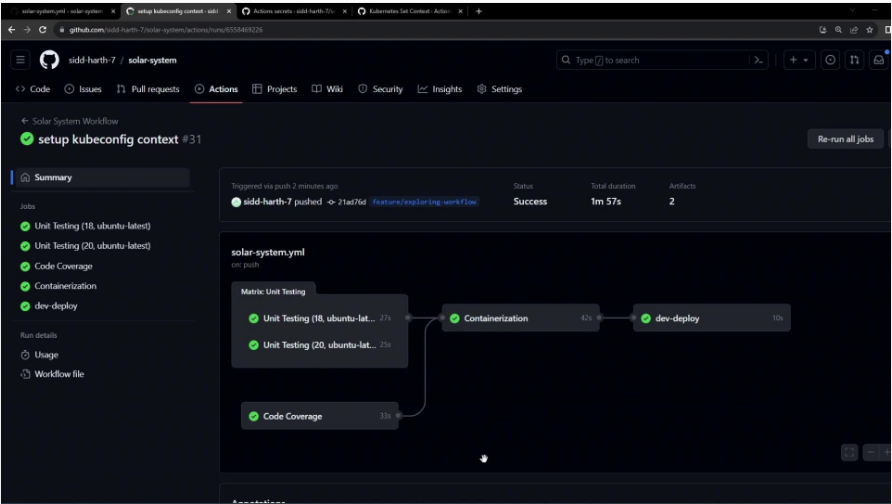

Online Banking Web App on AWS EKS
A three-tier online banking web application deployed on Amazon EKS using Terraform for infrastructure provisioning and ArgoCD for GitOps-based continuous deployment. The project integrates containerized frontend and backend services, Amazon ECR, Kubernetes manifests, and secure HTTPS access.
Client
Personal Project
Role
Cloud Engineer & DevOps Engineer
Timeline
2 Months
Deliverables
AWS, Terraform, EKS, GitOps

AWS EKS
Container orchestration
Terraform
Infrastructure as Code
ArgoCD
GitOps deployment
Amazon ECR
Container image registry
Project Overview
The goal of this project was to deploy a three-tier online banking web application on Amazon EKS, using Infrastructure as Code and GitOps-based deployment practices.
Terraform was used to provision the AWS infrastructure, while ArgoCD managed application deployments from Kubernetes manifests stored in Git. The deployment incorporated containerized application services, Amazon ECR, Kubernetes networking, and secure HTTPS access.
Architecture and Technologies
The solution combines AWS cloud infrastructure with container orchestration and automated deployment workflows.
- AWS EKS for running containerized application workloads.
- Terraform for infrastructure provisioning.
- Amazon ECR for storing container images.
- ArgoCD for GitOps-based application deployment.
- Kubernetes manifests for defining application resources.
- HTTPS configuration for secure application access.
Implementation
The project involved provisioning the infrastructure, preparing container images, configuring Kubernetes resources, and setting up the GitOps deployment workflow. The architecture diagram illustrates the relationship between the AWS infrastructure, EKS workloads, supporting services, and deployment components.
Key Learnings
This project strengthened my practical understanding of AWS infrastructure, Terraform, Kubernetes, container image management, GitOps, and cloud application deployment.
Project Evidence
Infrastructure Screenshots and Evidence
Evidence from the deployment of a three-tier online banking application using AWS infrastructure, Amazon EKS, Terraform, and Argo CD.

Argo CD GitOps Deployment
Application resource tree and synchronization status in Argo CD.

Amazon EC2 Instances
Compute resources visible in the AWS console during the project.

Amazon RDS MySQL
Database console evidence for the application's data layer.

Kubernetes Ingress and TLS
Ingress routing and TLS certificate configuration.

AWS Subnet Configuration
Network subnet evidence associated with the cloud infrastructure.
Deployment Strategy
I structured the project around three key principles: infrastructure automation, GitOps-based deployment, and secure, observable application workloads.
Infrastructure as Code
Use Terraform to define and provision AWS infrastructure consistently through version-controlled configuration.
GitOps Automation
Use GitHub Actions and ArgoCD to support automated build workflows and Git-based Kubernetes deployment management.
Security and Reliability
Organize application workloads, networking, container images, and HTTPS access to support a secure deployment architecture.
Implementation Process
The project followed a practical cloud deployment workflow, from infrastructure provisioning and container preparation to Kubernetes orchestration and GitOps-based application delivery.
AWS Infrastructure Provisioning
Used Terraform to define the AWS infrastructure, including the networking and resources required to run the application on Amazon EKS.
Containerization and Image Management
Prepared containerized application services and used Amazon ECR to store container images for deployment to the Kubernetes environment.
Kubernetes Deployment on Amazon EKS
Configured Kubernetes manifests and deployed application workloads to Amazon EKS, organizing services within the cluster environment.
GitOps with ArgoCD
Connected Git-based Kubernetes configuration with ArgoCD to manage application deployment and synchronization with the desired configuration.
Secure Access and Validation
Configured and validated application access, networking, and HTTPS as part of the deployment workflow. Reviewed the architecture to understand how the infrastructure and application components work together.
Key Learnings
This project strengthened my practical understanding of AWS infrastructure, Terraform, Amazon EKS, container image management, Kubernetes networking, GitOps workflows, and cloud application deployment. It also helped me understand how infrastructure provisioning and application delivery fit together in a cloud-native environment.

GitHub Actions CI/CD pipeline showing successful build and Kubernetes manifest update workflows.
ArgoCD showing the online banking application's health and GitOps synchronization status.
AWS VPC subnet configuration for the cloud infrastructure.
Key Technical Decisions
Infrastructure as Code with Terraform
Terraform was used to define and provision the AWS infrastructure required for the online banking application. Managing infrastructure through code supports consistency, version control, and repeatable deployments.
Container Orchestration with Amazon EKS
Amazon EKS provides the Kubernetes environment for running the application's containerized workloads. Kubernetes manifests define application resources and help organize the services running within the cluster.
GitOps Deployment with ArgoCD
ArgoCD manages application deployments using Kubernetes configuration stored in Git. This GitOps approach helps keep deployed resources synchronized with the desired configuration maintained in the repository.
Container Image Management with Amazon ECR
Amazon ECR provides a registry for storing container images used by the application deployment workflow. It integrates with the Kubernetes environment to support the delivery of containerized services.
Project Outcomes
Over the two-month project, I worked through the process of provisioning AWS infrastructure, deploying a containerized banking application, and managing Kubernetes workloads using GitOps practices.
- AWS infrastructure: Provisioned the required cloud resources using Terraform.
- Kubernetes orchestration: Deployed application workloads on Amazon EKS.
- Container image management: Used Amazon ECR to store application container images.
- GitOps deployment: Used ArgoCD to manage Kubernetes application deployments.
- Architecture documentation: Documented the relationship between the AWS infrastructure, Kubernetes workloads, and deployment components.
Challenges and Learnings
This project strengthened my practical understanding of AWS cloud infrastructure, Terraform, Docker, Kubernetes, Amazon EKS, Amazon ECR, and ArgoCD. It also helped me understand how infrastructure provisioning, container orchestration, and GitOps-based application delivery work together in a cloud-native environment.
One of my key takeaways was the importance of coordinating infrastructure configuration with Kubernetes deployment requirements. I also gained experience understanding how networking, container registries, and application deployment components fit into the overall architecture.
Future Improvements
Future improvements could include expanding automated testing, strengthening security checks in the CI/CD workflow, improving observability, and documenting operational procedures for troubleshooting and recovery.
Interested in my cloud engineering and DevOps projects? Get in touch to discuss a project or collaboration.